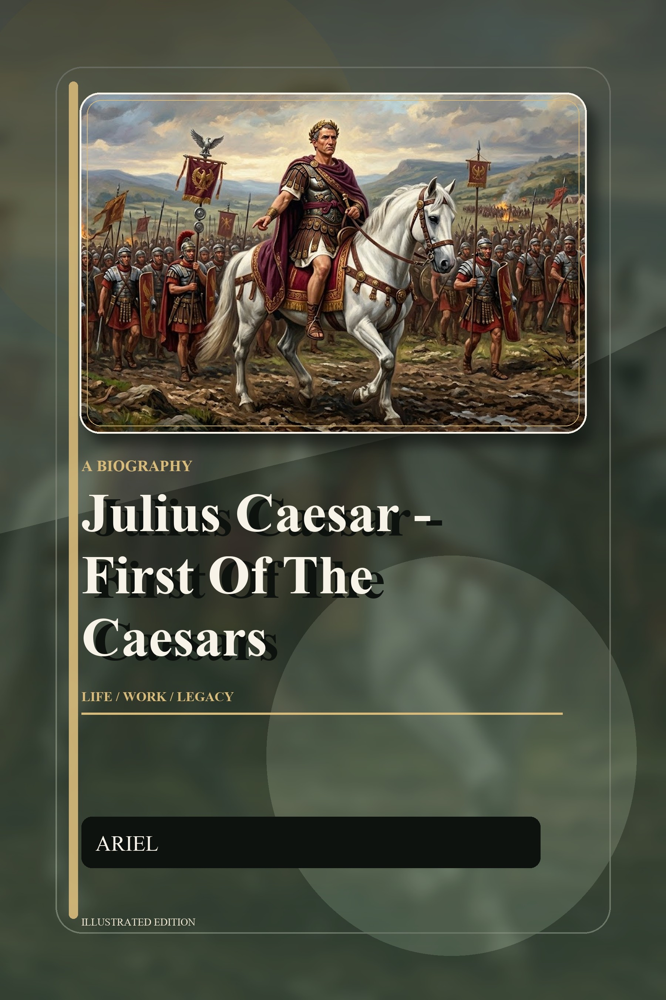

Julius Caesar — First of the Caesars: A Review
Julius Caesar — First of the Caesars is exactly the kind of biography I've been looking for: long enough to do the man justice, structured enough to pull a reader through, and disciplined enough to keep the legend from swallowing the history. It opens not with Caesar's birth but with the city he was born into — and that decision sets the tone for everything that follows.
Rome before Caesar — and why the book starts there
The first chapter, "The World into Which Caesar Was Born," is the best opening I've read in a popular Roman biography. Instead of leading with the man, it leads with the system. We get the Republic at its breaking point: the Gracchi brothers murdered in the streets, latifundia displacing small farmers, the Italian allies pressing for citizenship, and the Senate weaponizing tradition to protect its own. By the time Caesar appears, on the 12th or 13th of July, 100 BCE, the reader already knows why Rome was a "powder keg of contradictions."
The book's argument is implicit but clear: Caesar didn't break the Republic. The Republic was already breaking, and Caesar was the man who had the audacity to step into the cracks. That framing changes how you read everything that comes after.
What it gets right
The political education chapters. Caesar's rise from the ashes of Sulla's proscriptions through the praetorship and the Pontifex Maximus election in 63 BCE is told with patience and detail. The election for Pontifex Maximus — bribery, debt, and theatrical funeral games for his aunt Julia — is rendered as the masterclass in political theater that it actually was, not as a quirky anecdote.
The Gallic Wars without the propaganda. Most popular biographies effectively novelize Caesar's Commentaries on the Gallic War. This one doesn't. It uses the Commentaries as a primary source but treats them as the carefully-crafted self-promotion they were, sitting them next to archaeology and the (much shorter) Gallic point of view. Alesia is still Alesia — the double siegeworks remain extraordinary — but Vercingetorix is given his weight, and the casualty figures are not laundered.
The Rubicon decision. The crossing in January 49 BCE is the moment every biography wants to deliver, and this one earns it. By that point we've watched Crassus die at Carrhae, the Triumvirate dissolve, Pompey drift back to the optimates, and the Senate corner Caesar with the choice of prosecution or war. Alea iacta est lands like a verdict, not a slogan.
The Ides of March as a personal tragedy. The conspirators are given honest motives — Brutus's principled idealism, Cassius's grievance, the Senate's terror at "dictator perpetuo" — but the book is unsparing about what their plot actually accomplished: not the rescue of the Republic, but its replacement by Augustus.
Where I wanted more
If I had one note, it's the late-Caesar reform program. The Julian calendar, the citizenship grants in the provinces, the colonies for veterans — these get a chapter, but they deserve two. Caesar's last eighteen months were arguably more transformative for the empire that followed than the entire decade of the Gallic Wars, and the book is so committed to the political narrative that the institutional reforms feel slightly compressed.
I'd also have welcomed a longer treatment of Caesar as a writer. The Commentaries are the source we keep returning to; a few pages on how unusual it was for a Roman general to publish his own dispatches in clean third-person Latin — and what that did for his political brand back home — would have rewarded the reader.
Who should read it
Three audiences, in this order:
- Anyone who keeps starting Roman history books and not finishing them. This one moves. The chapter structure does most of the work — short scenes, hard breaks, no wallowing.
- Readers who already know the outline and want a serious-but-readable treatment. It's not Suetonius-thin and it's not Goldsworthy-encyclopedic; it sits between them. That middle is where most readers actually live.
- Anyone who's tired of the "tyrant vs. visionary" framing. The book refuses to choose. Caesar is both, in roughly the proportions the surviving evidence supports.
Verdict
Julius Caesar — First of the Caesars is the rare biography that takes its subject's reputation seriously without being captured by it. The illustrated edition is genuinely useful — the maps of Gaul and the layout of Alesia are the kind of thing that used to require a separate atlas — and the prose stays at a steady, alert clip from the first page to the last. Recommended without reservation, especially for the reader who wants to understand not just what Caesar did, but why the Rome that produced him made his entire career possible.
Where to Read
If you'd like to read the full book, find it at the retailer of your choice: